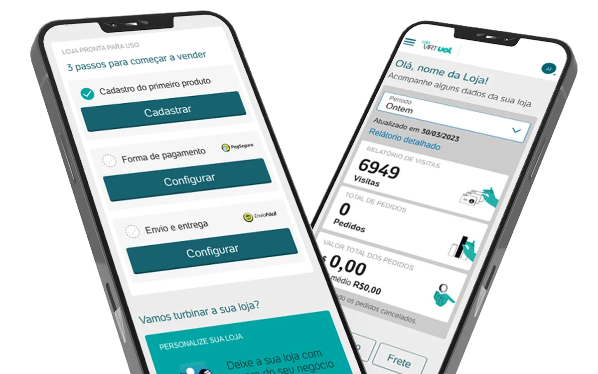
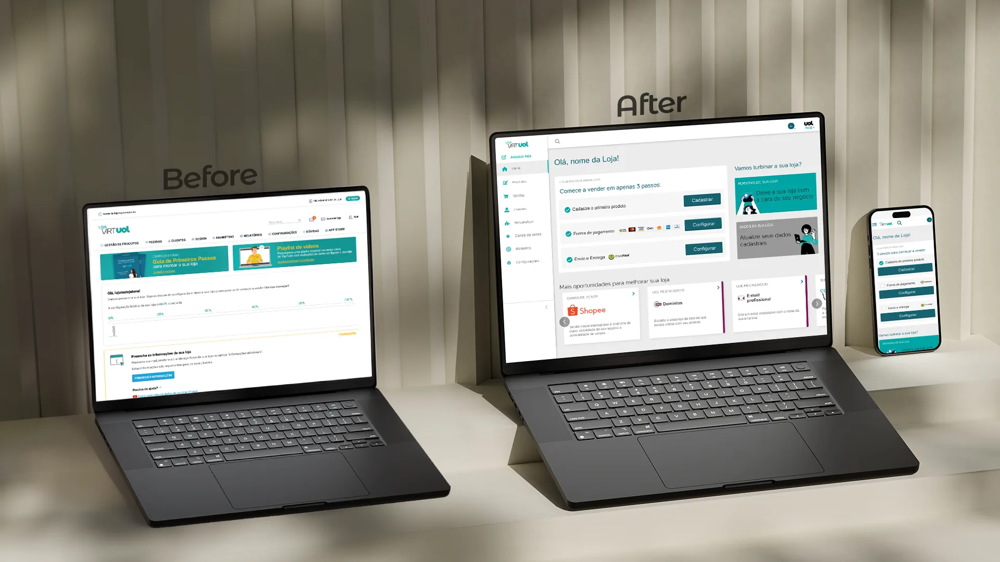
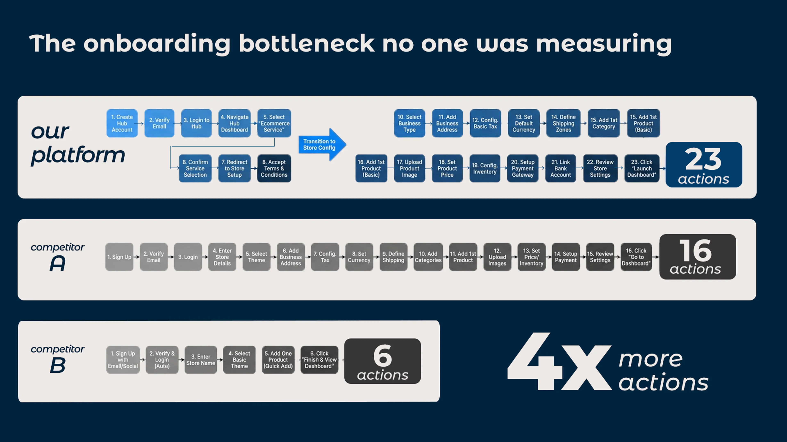
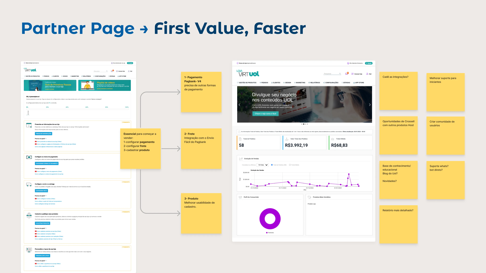
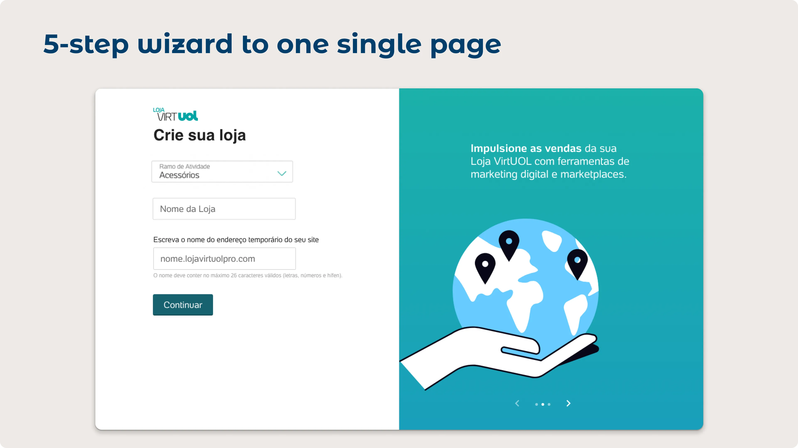
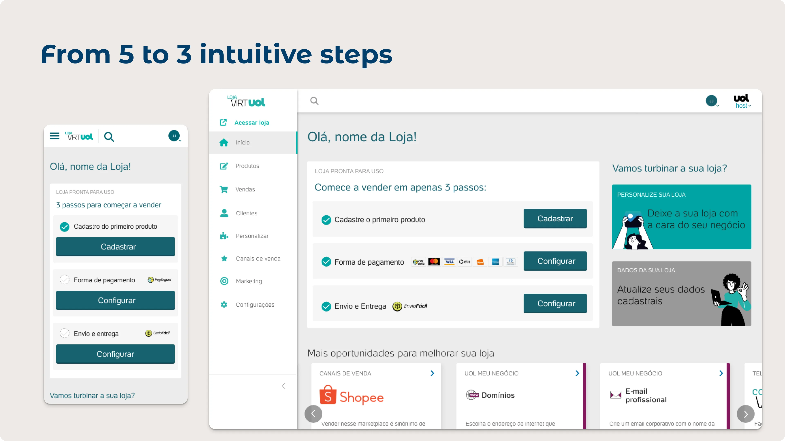
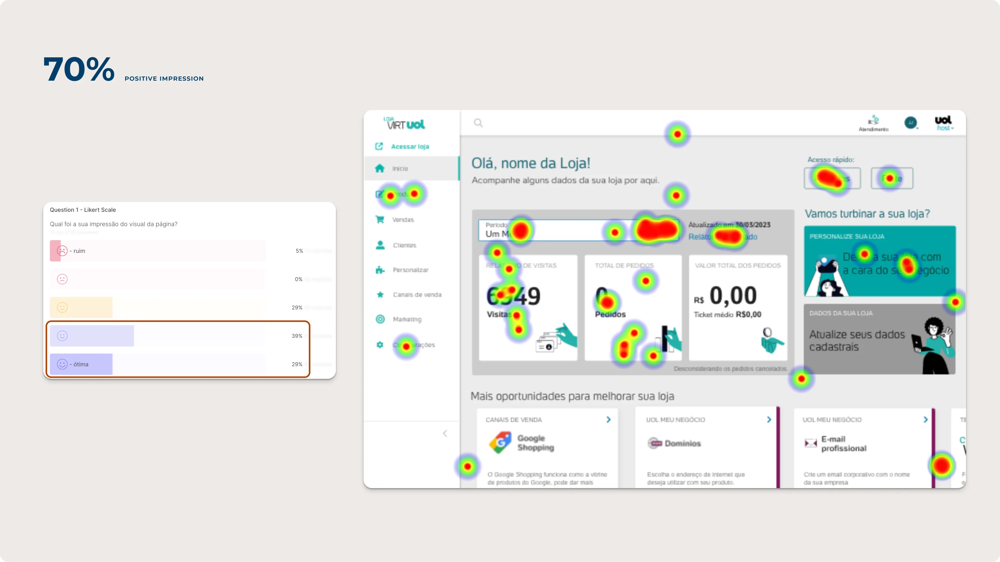
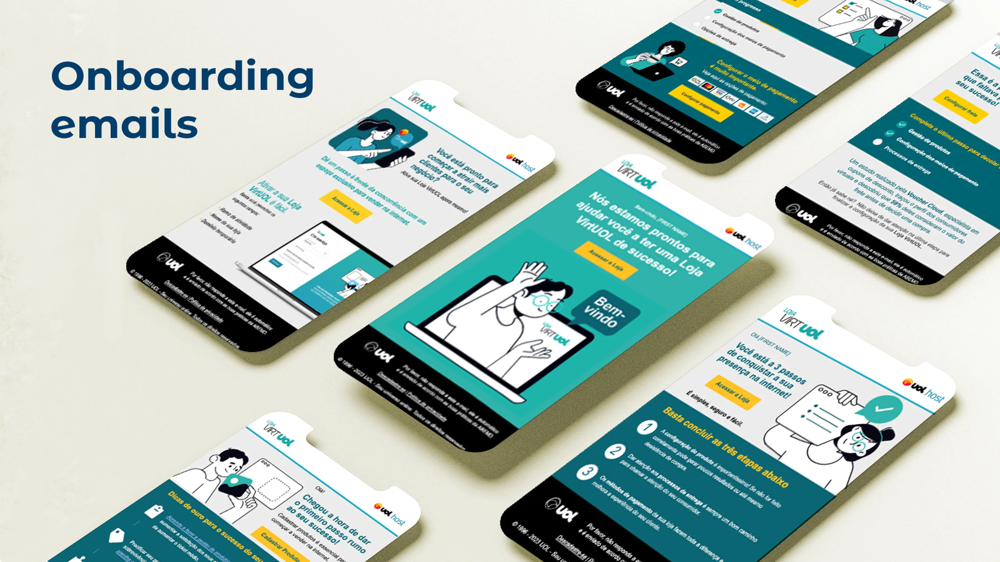

UOL Host's solutions hub includes a B2B SaaS e-commerce platform for SMB sellers. A partner's legacy version migrated into it, bringing its users and its broken onboarding: 23 steps, no mobile, no clear way in. I redesigned the full journey across product, CRM, and support in 3 months.
The brief I was handed: redesign the onboarding.
The brief I shipped: four workstreams, none of them assigned to me.


Before: 23 steps, desktop only. After: mobile-first, single page, store-ready in minutes.
Problem
The setup wizard alone ran across 5 disconnected screens. Competitors averaged 6 to 16 steps. The platform was desktop-only, though most SMB owners run their business from their phones.
Constraint
The first onboarding steps were shared across the hub and owned by another team. I couldn't touch them. So I reframed the problem: if the entry can't change, how do we get users to value faster once they're inside?

23 actions vs the competitor's 6.
My Role
I was the only designer across four workstreams. The CRM emails, mobile-first approach, and in-product support form were my additions, each backed by evidence: drop-off data, the 23-step benchmark, user complaints. Bi-weekly live work-in-progress reviews with 10 stakeholders across engineering, business, product, CRM, and sales turned the most skeptical voices into champions by launch.

01. First screen after onboarding: immediate value, not options.

02. Setup wizard: 5 disconnected screens to one scannable page.

03. 5 steps to 3: register a product, set up payment, configure shipping.
Onboarding in motion: one page, progressive disclosure, no dead ends.

04. Heatmap validation: 70% of engagement landed where we designed it.
The redesigned dashboard answers one question immediately: what do I do next?

05. Trigger-based emails, one per onboarding stage, bringing owners back to where they stopped.
Design Decisions
SMB owners check orders and answer customers from their phones, and the legacy platform ignored that. I designed mobile first and scaled up, so every screen started from the smallest viewport.
Users lost context between steps, so I consolidated the wizard into one page with progressive disclosure. Engineering already knew the patterns, so the build stayed on schedule.
The first thing users said after onboarding was "what do I do now?" The dashboard answers it: what's set up, what's missing, the fastest path to store-ready. The heatmap confirmed it.
Results & Impact
All four workstreams launched together, and none would have moved the numbers alone.
Key Learnings
What I'd do differently
I'd let user research challenge the brief earlier, not confirm the design later. One usability round changed things; more rounds, earlier, would have sharpened more decisions.